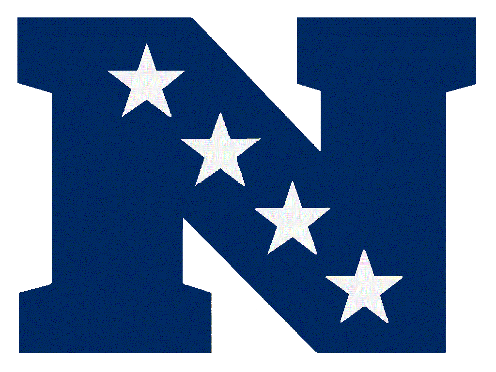
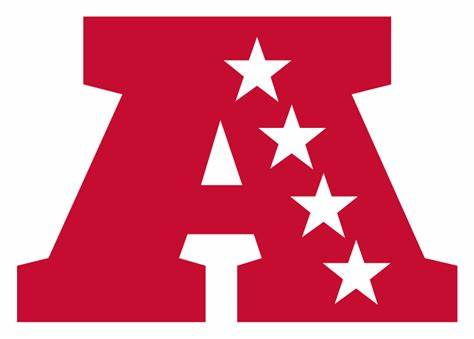

NFC Teams

North
- Bears = 12-5
- Packers = 12-5
- Lions = 11-6
- Vikings = 4-13
East
- Cowboys = 10-7
- Eagles = 9-8
- Commanders = 5-12
- Giants = 5-12
South
- Buccaneers = 12-5
- Falcons = 11-6
- Saints = 6-11
- Panthers = 2-15
west
- 49ers = 14-3
- Rams = 11-6
- Seahawks = 9-8
- Cardinals = 4-13
NFC Overview
Bears, Buccaneers, Cowboys, and 49ers are the division winners and the 49ers win the conference with the 1st seed
AFC Teams

North
- Ravens = 15-2
- Bengals = 14-3
- Browns = 11-6
- Steelers 4-13
East
- Jets = 13-4
- Dolphins = 11-6
- Bills = 7-10
- Patriots = 2-15
South
- Texans = 15-2
- Colts = 8-9
- Titans = 8-9
- Jaguars = 4-13
west
- Chiefs = 12-5
- Raiders = 9-8
- Broncos = 2-15
- Chargers = 2-15
AFC Overview
Ravens, Jets, TExans, and Chiefs win their divisions with either the Texans or Ravens walking away with the #1 seed.